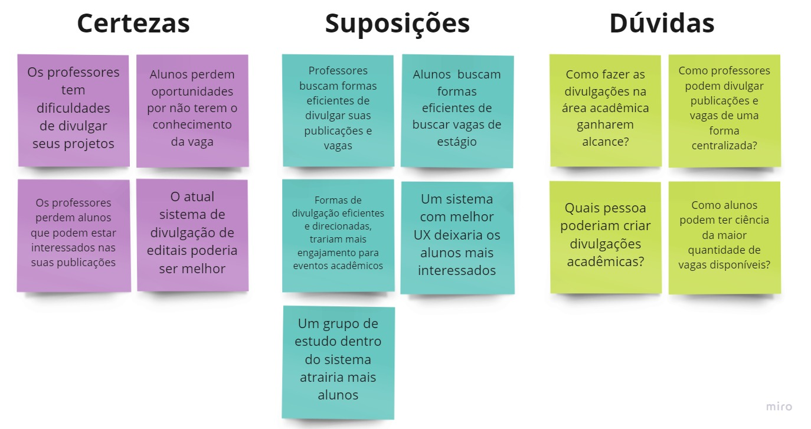

Imersão
Primeira fase do projeto onde serão levantados dados sobre o How Might We, Desk Research, Análise Competitiva, Questionário e Entrevista
Levantamento de dados através de uma pesquisa de mesa onde os integrantes do grupo participaram.
Levantamento de dados de possíveis competidores e suas plataformas.
Questionário disponibilizado ao público para levantar dados de necessidades.
Entrevista feita pelo grupo para levantar dados de necessidade.
How Might We?
HMW é uma técnica para identificar um tipo de desafio e formulá-lo por meio de uma pergunta para criar a base de um desafio que se tem como objetivo solucionar.
Durante os semestres da faculdade o nosso grupo encontrou dificuldades de encontrar informações sobre conteúdos exclusivos da faculdade como por exemplo: bolsas, projetos de extensão, iniciação científica, estágios entre outros.
Com isso bolamos nosso HMW:
Como melhorar a divulgação de bolsas, projetos de extensão e iniciação científica entre discentes e docentes?
E com o objetivo de responder esse desafio precisaremos de uma pesquisa mais aprofundada.
Desk Research
A primeira etapa da nossa pesquisa foi fazer uma pesquisa de mesa com os membros do grupo e pesquisando na internet.
A Desk Research trata-se de uma maneira simples e de baixo custo para realizar pesquisas. Por meio dela são feitas pesquisas a partir de informações já disponíveis. Dessa maneira, realizamos nossa Desk Research com base em pontos observados, principalmente nas redes sociais, na publicação de conteúdos relacionados ao meio acadêmico e na divulgação de vagas de estágio. Com isso, elaboramos anotações com base nas certezas - o que já sabemos sobre o assunto; suposições - hipóteses que precisam ser confirmadas; dúvidas - o que ainda não sabemos sobre o assunto.
A segunda etapa foi uma análise competitiva de competidores diretos e indiretos para encontrar vantagens e desvantagens dos nossos competidores.
O grupo escolheu dois possíveis competidores sendo o Portal UFF e o outro sendo o Facebook como ferramenta de compartilhamento
O primeiro competidor sendo o Portal UFF por ser um portal de divulgação focado na UFF e por divulgar editais com os temas de interesse
Vantagens
Desvantagens
Um dos competidores sendo o Facebook por conta da sua flexibilidade podendo compartilhar diversos tipos de assunto e encontrarem comunidades com interesse parecidos
Vantagens
Desvantagens
Na terceira etapa foi elaborado um questionário com o intuito de conseguir alguns dados considerados importantes para o projeto. Com isso, foi verificado como alunos e professores, principalmente, fazem publicações e pesquisam a respeito de conteúdos relacionados ao meio acadêmico ou vagas de estágio.
Ainda, foi investigado a respeito da satisfação desses indivíduos sobre o processo.Para isso, foi avaliada a experiência da realização do feito em sistemas com tais possibilidades. Tal avaliação foi feita a partir da decisão do respondente a respeito das opções: ruim, médio, bom, muito bom e excelente. Diante disso, foi estabelecida uma nota de zero a dez com base nas escolhas dos valores citados, sendo dez excelente e zero ruim.
Resultado
Com maioria dos respondentes sendo estudantes e professores. Grande parte já teve dificuldade em divulgar ou pesquisar sobre temas relacionados ao meio acadêmico. Além disso, foi identificado que muitos utilizam sites com conteúdos específicos relacionados ao tema, ou redes sociais. A maior parte dos respondentes definiu como mediano ou ruim para a pesquisa e divulgação de conteúdos acadêmicos em sistemas menos formais, enquanto que sites de cunho mais formal foram mais bem avaliados. Vale ressaltar que sistemas com conteúdos menos diversificados receberam uma melhor avaliação.
O processo da entrevista foi a quarta etapa onde foi necessário fazer uma entrevista com docentes e discentes com o objetivo de levantar informações sobre o assunto. Foram um total de 5 entrevistados que separamos em 3 grupos: Buscadores, Utilizadores e Alimentadores.
Buscadores
No grupo buscadores identificamos pessoas que fazem as suas buscas não regularmente, apenas nos momentos que necessitam encontrar algo específico, para esse tipo de usuário foi identificada a necessidade de ter notificações por email com conteúdos de interesse e bem filtrados levando em consideração o que foi declarado durante as entrevistas com o recebimento de conteúdos indesejados que vão para caixa de span.
Utilizadores
No grupo utilizadores identificamos pessoas que fazem as suas buscas mais regularmente e procuram uma forma de interação maior, alguma forma de comunicação mais simples e rápida entre as pessoas que disponibilizam a informação e eles. Para esse tipo de usuário foi identificada a necessidade de ter algum local que permitisse o diálogo entre os usuários.
Alimentadores
No grupo alimentador identificamos pessoas com oportunidades ou informações que desejam divulgar, porém precisam utilizar de diversas ferramentas para que possam disseminar para o máximo de pessoas possíveis, porém nem sempre chegam ao público alvo, deixando assim uma necessidade de alguma ferramenta que atinja o público alvo de interesse.
Ex: Eu só busco quando estou procurando algo em específico, um estágio, uma bolsa ou coisa do tipo, mas nesses casos busco em sites como vagas.com ou redes sociais da universidade.
Ex: Uma ideia que pode ajudar é alguma forma melhor de comunicação, tipo comentário ou direct, sei lá, já que a maioria das vezes quando quero mais informações sobre a pesquisa eu tenho que enviar email.
Ex: Eu uso uma lista de emails que normalmente envio as oportunidades que recebo e também compartilho, mas nem sempre chega nas pessoas que tem interesse mesmo.
Como foi observado no questionário, muitos professores e alunos apresentaram dificuldades no momento de divulgar e pesquisar coisas relacionadas ao meio universitário, mesmo existindo sites que possuam esse tipo de informação. A dificuldade se dá devido às informações estarem espalhadas em diversos sites, e na maioria das vezes escondidas, precisando aplicar muitos filtros e realizar muitos passos para achar o conteúdo. Logo chegamos a conclusão que as metas de design devem ser focadas em trazer uma experiência amigável para o usuário, permitindo ele achar o que busca de forma rápida e eficiente, portanto as metas de design definidas foram:
1) Quais são as metas de design de IHC do seu projeto? Por que a escolha destas metas?
Eficiência no uso, Interface simples e intuitiva e Facilidade de aprendizado. O motivo da escolha foi identificado através da entrevista e questionário feito com possíveis usuários, com isso notamos que as informações relacionadas ao meio estão muito espalhadas em diversos sites e muitas vezes escondidas precisando de muitos cliques para se chegar ao conteúdo desejado, percebemos que para o usuário ter interesse no uso do sistema o mesmo precisará ser eficiente e intuitivo para que o usuário ache o conteúdo desejado em poucos cliques.
2) Qual o processo de design está guiando o desenvolvimento do projeto de design da interação?
Design Thinking, no qual é dividido em 4 etapas, a Imersão, na qual observamos o momento atual e mapeamos as necessidades e pontos a serem melhorados, a Ideação, onde utilizamos da imersão para produzir ideias relevantes para realizar as melhorias necessárias, a Prototipação, na qual utilizamos das ideias produzidas, aplicando um filtro e utilizando dessas ideias para criar um protótipo para reduzir o risco de falhas, e por último o desenvolvimento que tiramos tudo do papel e colocaremos para funcionar mantendo o monitoramento para encontrar possíveis pontos de melhorias.
3) Qual a estratégia de design utilizada? Dirigida ao problema ou dirigida a solução? Justifique.
Até o momento utilizamos a estratégia dirigida ao problema já que utilizamos do HMW para encontrar nossas dificuldades e das pesquisas para levantar mais dados para poder solucionar nosso desafio.
4) Por que dizemos que o design da interação vai além do design da interface?
O design de interface é voltado para os aspectos gráficos do produto enquanto que o design de interação é voltado para como o usuário interage com o produto. O design de interação busca fazer com que o usuário alcance seu objetivo de informação da maneira mais fácil possível.
5) Qual a diferença entre perguntas abertas e perguntas fechadas?
Quando se trata de perguntas abertas o entrevistado possui um escopo maior para sua resposta, sem restrições sobre o tipo ou tamanho das respostas, já em perguntas fechadas o entrevistado possui um conjunto predefinido de respostas, sendo um pouco mais restrito, esse tipo de pergunta é bastante utilizado para coleta de dados qualitativos e quantitativos
6) Por que é importante aplicar mais de uma técnica de coleta de dados? Qual técnica deu melhor resultado? Por que?
É importante utilizar mais de uma coleta de dados, pois, com isso, há mais dados disponíveis para a realização do projeto, permitindo sua otimização. A entrevista deu melhores resultados, pois o entrevistado muitas vezes o entrevistado acabava fazendo surgir mais dúvidas e com isso mais resposta, trazendo uma grande gama de dados.
7) O grupo sugere aplicar outra técnica para aumentar a qualidade de seus achados? Qual e por que?
Utilizamos da Entrevista como técnica extra, entretanto para adicionar mais uma acreditamos que um brainstorm ajudaria mostrando ainda mais as necessidades dos usuários aumentando assim a precisão.
8) Como foram aplicados os procedimentos de ética?
No questionário foi informado o objetivo do mesmo e o usuário só poderia preencher o questionário caso concordassem com o mesmo e antes da entrevista foi lido um termo de consentimento onde foi perguntado ao entrevistado concordar com o mesmo.
Copyright © 2021 - All Rights Reserved - Gruple
Template by OS Templates